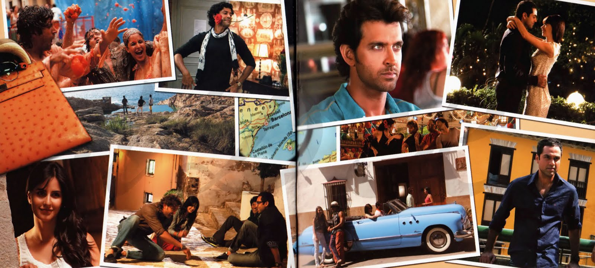

20 Bollywood Movies One Must Watch
Bollywood- by this name the only thing that comes to our mind is full on Drama,Action,Comedy,Romance,Climax and much more.Ever since our childhood we have been a great fan of bollywood movies.Some of them inspire us,some make us cry,some make us laugh and some even make us think that do these things happen in real life? aaa.. one second may be not. Well there are some movies which we cannot eraze out of our mind -like Kabhi Khushi Kabhi Gham-reminds me Kajol and Gamla scene ,Jab We Met forget Karena saying " mein apni favourite hu", Dil toh paagal hai-movie which gave us the most popular dialogue "Rahul naam to sunahi hoga" and much more. Here are some movies that you must watch once in your life - may be more than once.
Zindagi na Milegi Dobara
Life - don't you think we have made it more complicated on the way of doing our jobs and making our carrier we have stopped enjoying our life.Even the smallest things that use to make us happy no longer does that.So this movie tells us to explore the world and to the things that make us happy ,things that we fear the most don't keep them for our future coz you never know which is the last day of your life .So "My Bwoys" and my girls out there who haven't watched this movie do it .We live only once my friend and don't forget to keep the child in you alive .
Hera Pheri
"Ye Baburao ka style a" ,"Devi Prasad ghar par hain" are my favourite dialogue from this movie.Babu bhai ,raju and shyam characters from this movies can give you a laughter attack. They will entertain you in the movie and I bet you will have blast watching this movie. This is one of the biggest comedy hits in bollywood. If you loved this movie and were laughing like crazy them I would recommend you to watch the sequel of this movie Phir Hera Pheri and I sure it will not disappoint you.
Dil Chahta hai

"Dil Chahta hai hum na rahein kabhi yaaro ke bin" - umm... let me guess reading these lines did just thought about your friends may be yes rigth. We always love our company of friends but after college we all get separated and get busy with our indiviual lives. Very few of them remain in contact - by that I don't mean your contact list or your facebook friend I mean to say the contact which you had with them in college or school days . This movie has a similar plot Amir ,Saif and Akshay has done justice with the roles in the movie. So do watch this movie it will remind you your college days and the time which you enjoyed the most.
3 Idiots

"How does an induction moter starts ?" is my favourite scene from this movie .Rancho, Raju and Farhan from their story tells us about our eduction system. Movie tell use that life is not a rat race and a compitition. Life is not about doing what the most people out their are doing you can have a different carrier. Rancho tells us to follow our passion and make it our carrier and you will enjoy whatever your doing .As Rancho says "Success ke piye mat bhago ,Excellence ke peeche bagho phir dekha Success jhak mar ke tumhare pass ayegi". Just follow your heart and see the magic .
Yeh Jawani Hai Deewani
Okay then its another friendship movie in list because for everyone friends matters the most in our life and enjoy watching these kind of movies. Bunny was the most passionate in movie left everything for his passion ."Main Udana chata hoo , Duadna chata hoo , Girna bhi chata hoo bas Rukana nhi chata " this dialogue of bunny motivates all of us. You will enjoy unconditional friendship in this movie. It will remind you of your best friends. No doubt this movie is a masterpiece.